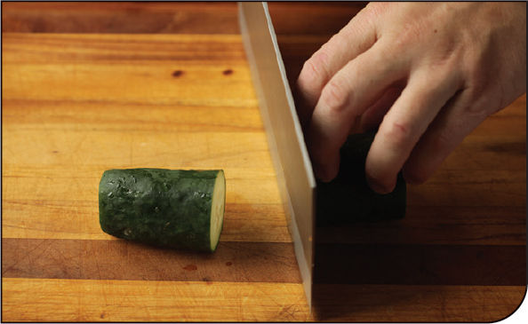
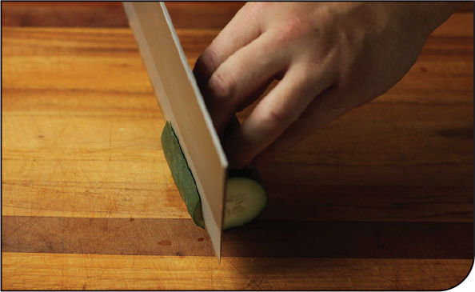
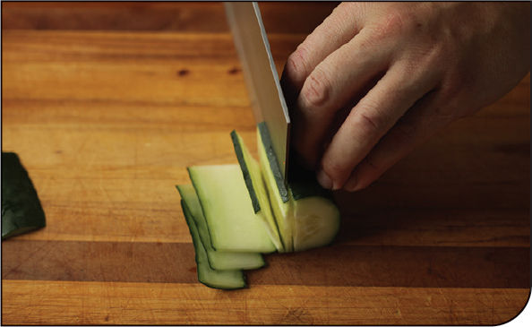
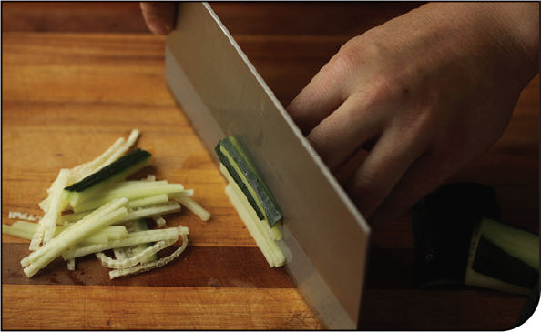

How to Julienne Cucumbers
A fine julienne of cucumbers is a classic addition to many noodle-based salads. Thin strips align with noodles much better than chunks or slices do, which makes them easier to pick up with chopsticks together with the noodles.
For noodle salads, I like using thin-skinned English or Persian cucumbers. If using American cucumbers, peel them first and discard any watery seed sections after cutting into strips.
KNIFE SKILLS
Step 1 • Divide into Sections

Trim off the ends of the cucumber, then divide it crosswise into 2- to 3-inch segments.
Step 2 • Form a Base

Working one section at a time, cut a thin segment lengthwise off one side of the cucumber to form a stable base for it to rest on. Alternatively, use a mandoline slicer to cut the cucumber into even ⅛-inch planks and skip to step 4.
Step 3 • Cut into Planks

Hold the cucumber steady against its stable base, then with the tip of your knife planted against the cutting board and using the knuckles of your nonknife hand to guide you, cut the cucumber into ⅛-inch planks by pulling your knife backward through it in steady, even strokes. Pulling back through the cucumber like this instead of chopping up and down will prevent the planks from sticking to the side of your knife, making them easier to stack and align in the next step.
Step 4 • Cut into Strips

Stack the planks into piles 3- to 4-planks high, then cut the planks into 1⅛-inch strips.